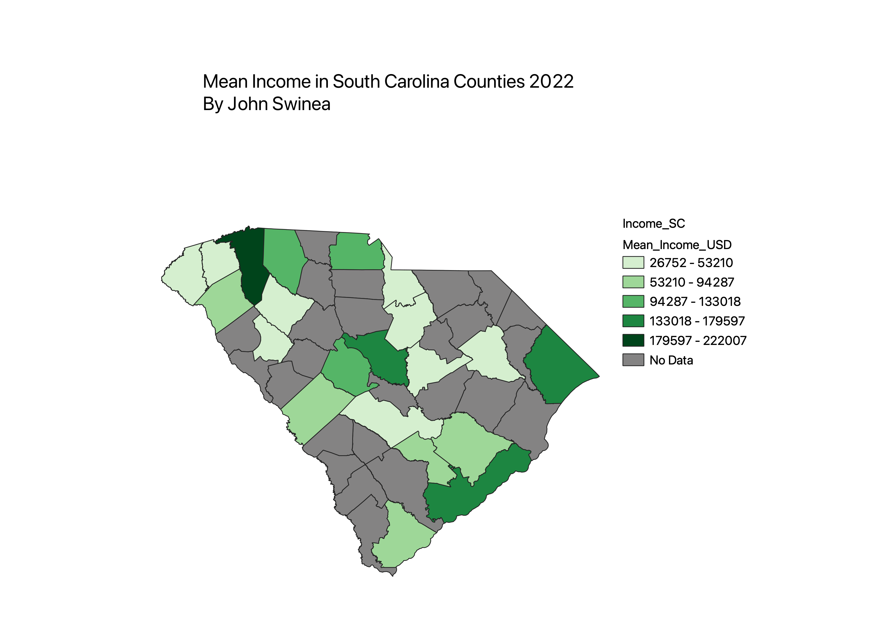

Homework 6: Census data choropleth
John Swinea
My map is of mean income in South Carolina Counties in 2022. I used data from the census, however it only had some counties data available, so I made any counties that were not represented in the data grey.

Data used for this project
CSV dataset
Link to shapefile